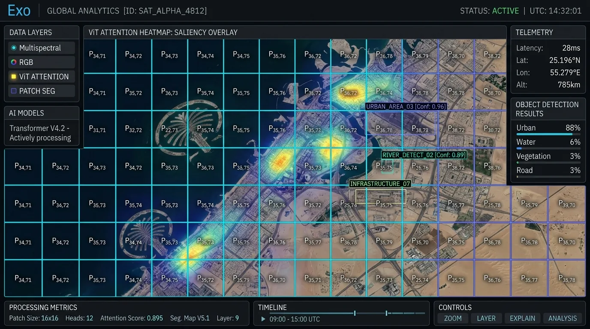
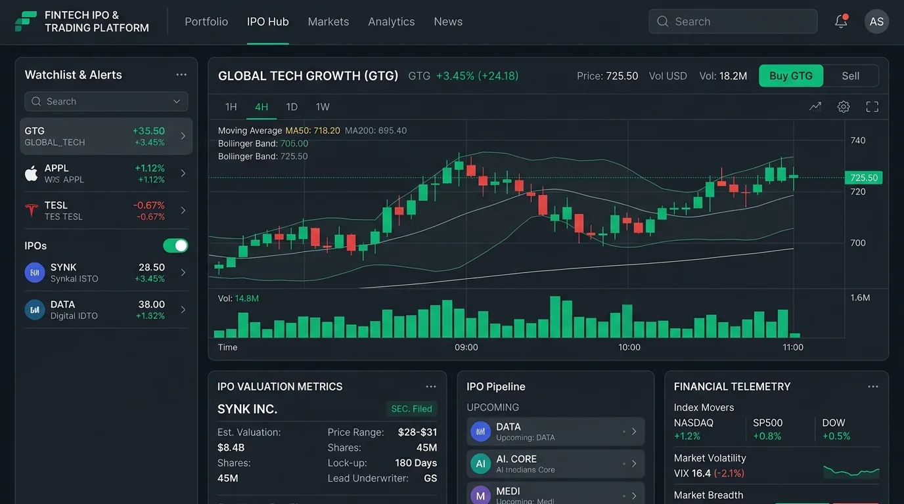
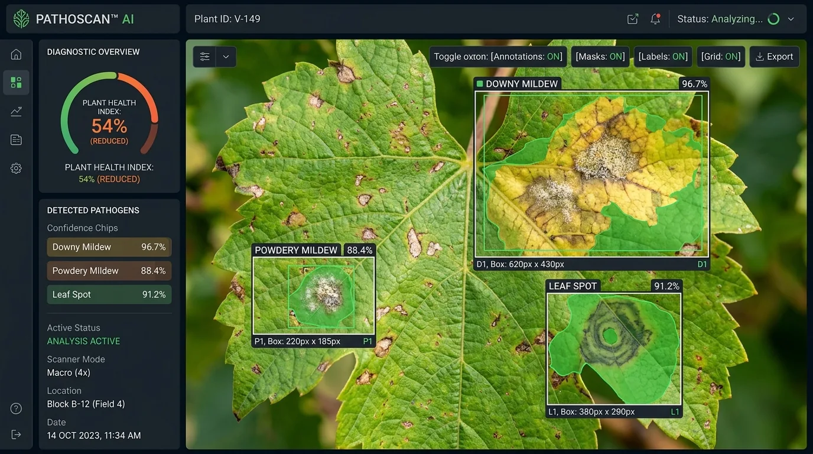
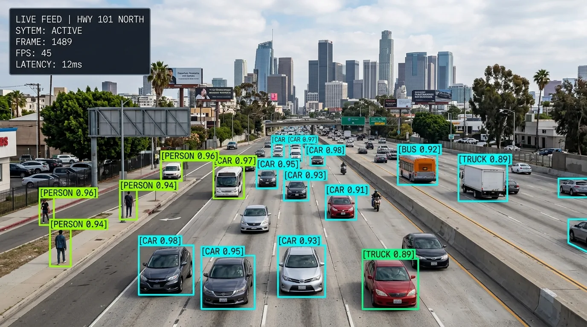
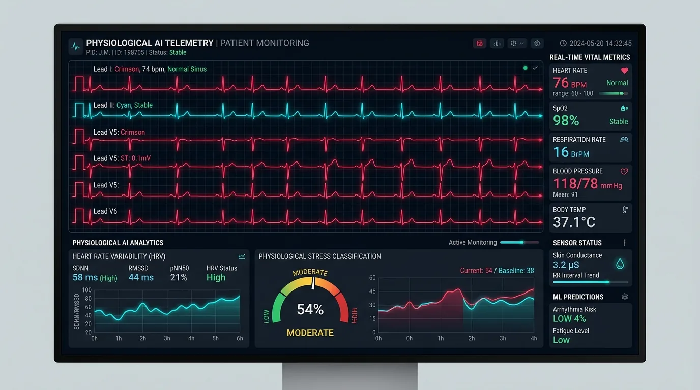
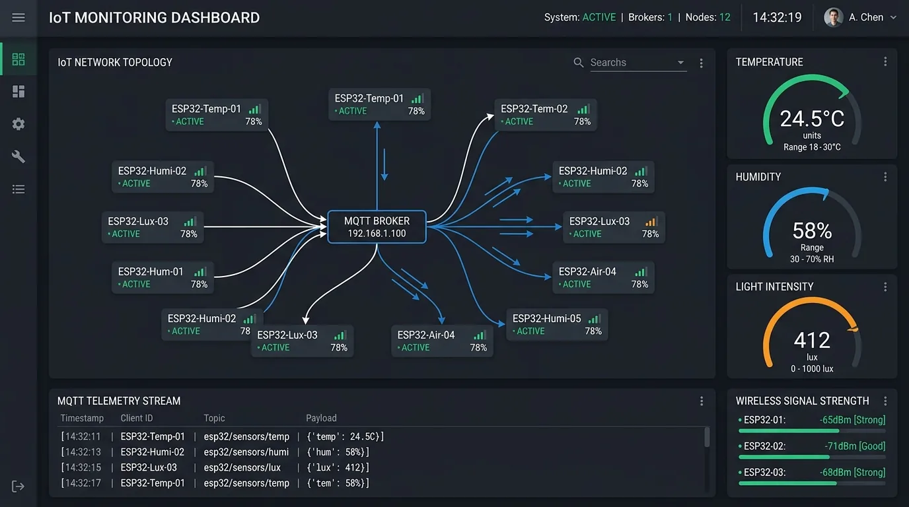

SDE Intern
→ Team Lead
Bluestock Fintech
IPO DashboardAI/ML Engineer × AI Product Builder
Computer Vision · Explainable AI · Generative AI · Product
Bluestock Fintech
IPO DashboardGenerative AI × Product Management
Hybrid · 2026–2028Explainable Vision Transformer
Satellite image analysisI care about AI that can be understood, shipped, measured, and improved. My engineering background gives me the systems lens; product work gives me the reason to build the right thing.

A novel framework generating transformer-aligned explanation maps for remote sensing. Published in IEEE RMKMATE 2026.

End-to-end product work across a live IPO data workflow, from interface decisions to backend integration.

CNN-based image classification with a Streamlit experience designed for immediate feedback and explainability.

Real-time detection and classification using YOLO architecture, OpenCV tracking, and transfer learning.

Feature-engineered ML models for physiological datasets with classification and evaluation pipelines.

A suite of accessible IoT builds: smart blind stick, GPS tracker, and room monitoring system.
Chandigarh University — machine learning, deep learning, computer vision, robotics.
Led delivery around an IPO dashboard and bridged frontend, backend, and product execution.
Explainable Vision Transformer for satellite image analysis; oral presentation and IEEE Xplore publication.
Hybrid degree focused on AI models, product management, business analytics, governance, and strategy.
PyTorch · TensorFlow · scikit-learn · OpenCV · YOLO · Vision Transformers · Grad-CAM
click to filter projects →Python · JavaScript · SQL · Git · Docker · APIs
click to filter projects →Research · Roadmapping · Agile/Scrum · Jira · Stakeholder coordination
click to filter projects →Pandas · NumPy · Matplotlib · Tableau · Predictive analytics
click to filter projects →ESP32 · Arduino · MQTT · IoT · Sensor integration
click to filter projects →LLM systems · RAG · AI product strategy · GPU fundamentals · product analytics
explore AI lab →Two-year, full-time master's degree in hybrid mode. The programme explicitly connects AI models, product management, data-driven decision-making, ethics/governance, and capstone work.
Programme detailsEvery weird little production detail gets a checkbox before this portfolio ships.
For AI/ML engineering roles, AI product builds, research collaborations, or high-conviction technical problems.